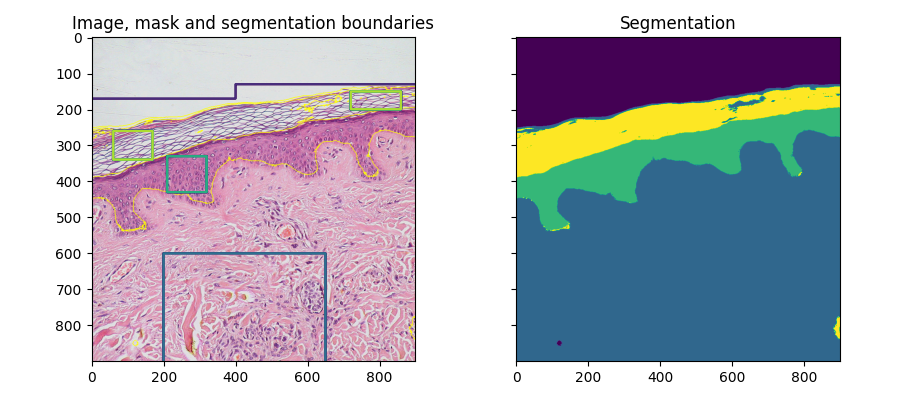
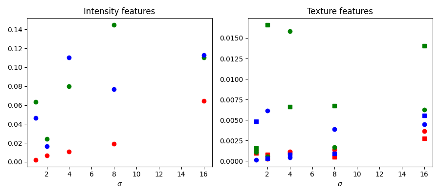
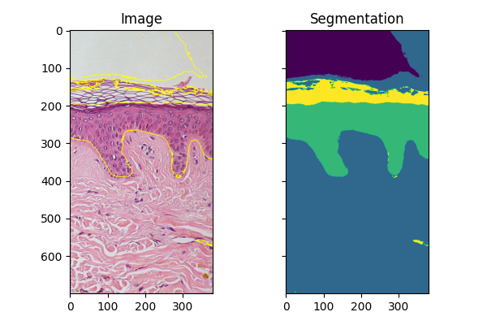

Note
Go to the end to download the full example code or to run this example in your browser via Binder
Trainable segmentation using local features and random forests#
A pixel-based segmentation is computed here using local features based on local intensity, edges and textures at different scales. A user-provided mask is used to identify different regions. The pixels of the mask are used to train a random-forest classifier [1] from scikit-learn. Unlabeled pixels are then labeled from the prediction of the classifier.
This segmentation algorithm is called trainable segmentation in other software such as ilastik [2] or ImageJ [3] (where it is also called “weka segmentation”).
import numpy as np
import matplotlib.pyplot as plt
from skimage import data, segmentation, feature, future
from sklearn.ensemble import RandomForestClassifier
from functools import partial
full_img = data.skin()
img = full_img[:900, :900]
# Build an array of labels for training the segmentation.
# Here we use rectangles but visualization libraries such as plotly
# (and napari?) can be used to draw a mask on the image.
training_labels = np.zeros(img.shape[:2], dtype=np.uint8)
training_labels[:130] = 1
training_labels[:170, :400] = 1
training_labels[600:900, 200:650] = 2
training_labels[330:430, 210:320] = 3
training_labels[260:340, 60:170] = 4
training_labels[150:200, 720:860] = 4
sigma_min = 1
sigma_max = 16
features_func = partial(
feature.multiscale_basic_features,
intensity=True,
edges=False,
texture=True,
sigma_min=sigma_min,
sigma_max=sigma_max,
channel_axis=-1,
)
features = features_func(img)
clf = RandomForestClassifier(n_estimators=50, n_jobs=-1, max_depth=10, max_samples=0.05)
clf = future.fit_segmenter(training_labels, features, clf)
result = future.predict_segmenter(features, clf)
fig, ax = plt.subplots(1, 2, sharex=True, sharey=True, figsize=(9, 4))
ax[0].imshow(segmentation.mark_boundaries(img, result, mode='thick'))
ax[0].contour(training_labels)
ax[0].set_title('Image, mask and segmentation boundaries')
ax[1].imshow(result)
ax[1].set_title('Segmentation')
fig.tight_layout()

Feature importance#
We inspect below the importance of the different features, as computed by scikit-learn. Intensity features have a much higher importance than texture features. It can be tempting to use this information to reduce the number of features given to the classifier, in order to reduce the computing time. However, this can lead to overfitting and a degraded result at the boundary between regions.
fig, ax = plt.subplots(1, 2, figsize=(9, 4))
l = len(clf.feature_importances_)
feature_importance = (
clf.feature_importances_[: l // 3],
clf.feature_importances_[l // 3 : 2 * l // 3],
clf.feature_importances_[2 * l // 3 :],
)
sigmas = np.logspace(
np.log2(sigma_min),
np.log2(sigma_max),
num=int(np.log2(sigma_max) - np.log2(sigma_min) + 1),
base=2,
endpoint=True,
)
for ch, color in zip(range(3), ['r', 'g', 'b']):
ax[0].plot(sigmas, feature_importance[ch][::3], 'o', color=color)
ax[0].set_title("Intensity features")
ax[0].set_xlabel("$\\sigma$")
for ch, color in zip(range(3), ['r', 'g', 'b']):
ax[1].plot(sigmas, feature_importance[ch][1::3], 'o', color=color)
ax[1].plot(sigmas, feature_importance[ch][2::3], 's', color=color)
ax[1].set_title("Texture features")
ax[1].set_xlabel("$\\sigma$")
fig.tight_layout()

Fitting new images#
If you have several images of similar objects acquired in similar conditions, you can use the classifier trained with fit_segmenter to segment other images. In the example below we just use a different part of the image.
img_new = full_img[:700, 900:]
features_new = features_func(img_new)
result_new = future.predict_segmenter(features_new, clf)
fig, ax = plt.subplots(1, 2, sharex=True, sharey=True, figsize=(6, 4))
ax[0].imshow(segmentation.mark_boundaries(img_new, result_new, mode='thick'))
ax[0].set_title('Image')
ax[1].imshow(result_new)
ax[1].set_title('Segmentation')
fig.tight_layout()
plt.show()

Total running time of the script: (0 minutes 4.189 seconds)